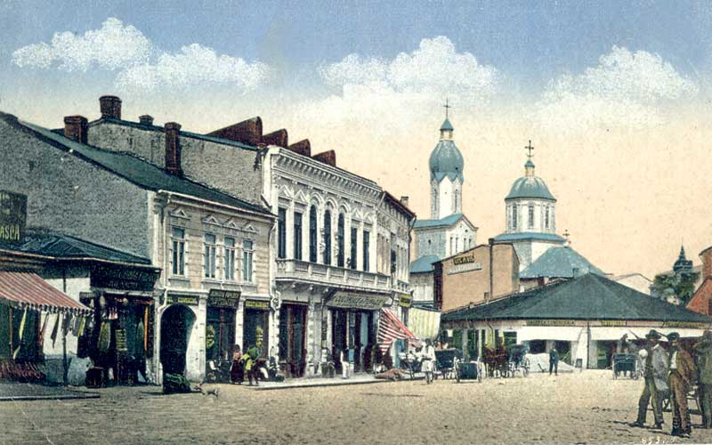

The earliest traces of human settlements in this area relate to the Paleolithic.Coins minted by the Dacians during the 3rd century BC, copying the design of Thracian tetradrachmon issued by Lysimachus, have been discovered here.A small Roman castrum was built sometime in the 3rd century AD in the vicinity of present-day Pitești (part of a protection system for Roman Dacia and Moesia).During the Age of Migrations, the Pitești area was, according to historian Constantin C. Giurescu, the site of trading between Vlachs and Slavs, which, in his opinion, was the origin of Târgul din Deal ("The Market on the Hill"), a separate locality.
The first recorded mention of Pitești itself was on May 20, 1386, when Wallachian Prince Mircea I granted a gristmill in the area to Cozia Monastery.Pitești was subsequently one of the temporary residences of Wallachian Princes.Due to its positioning on the junction of major European routes (and its proximity to the Saxon markets in Hermannstadt, Transylvania), the city originally developed as an important commercial center.By the late 14th century, it became home to a sizable Armenian community.
At the time, the locality was only extending on the left bank of the Argeș, and gradually expanded over the river, reaching the hill slopes to the west[3] (in the 19th century, it completely absorbed Târgul din Deal).While Pitești was commonly designated as a high-ranking town, a village of Pitești was still mentioned as late as 1528, which led some historians to conclude that the village and urban area coexisted within the same boundaries.
Although princely quarters have not been uncovered, among the rulers to issue documents from Pitești were Basarab Țepeluș cel Tânăr (1477–1481), Neagoe Basarab (1512–1521), Vlad Înecatul (1530–1532), Vlad Vintilă de la Slatina (1532–1535), Michael the Brave (1593–1601), Simion Movilă (1601–1602), Matei Basarab (1632–1654) and Constantin Șerban (1654–1658).In addition, Constantin Brâncoveanu (1688–1714), who owned large sections of vineyard in the area, is reported to have spent several seasons in the town.
Under Vlad Vintilă, who allied himself with the Holy Roman Empire against his Ottoman overlords, Aloisio Gritti (governor of Ottoman Hungary) and his Wallachian boyar partisans camped in the Pitești neighborhood of Războieni, where they were attacked and defeated by the Prince.In 1600–1601, troops of the Polish-Lithuanian Commonwealth, led by Jan Zamoyski, were stationed in Pitești during their expedition against Michael the Brave (see Moldavian Magnate Wars).Around that time, fighting occurred in and around the town as the new prince Radu Șerban clashed with the Ottomans and their Crimean Khanate allies.